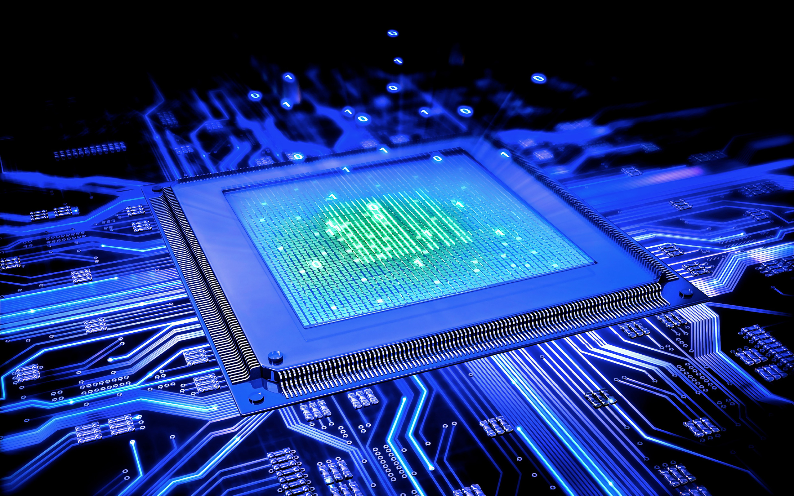

BAB I
ARSITEKTUR SISTEM KOMPUTER
Arsitektur Sistem Komputer
Arsitektur sistem komputer adalah konsep perencanaan dan struktur pengoperasia ndasar sistem komputer. Arsitektur sistem komputer adalah ilmu yang menghubungkan berbagai macam komponen perangkat keras (hardware) untuk menciptakan komputer yang memenuhi kebutuhan operasional, kinerja dan tujuan finansial.
Struktur dan Fungsi Komputer
- Input Device: Perangkat keras komputer yang berfungsi sebagai alat untuk memasukkan data atau perintah ke dalam komputer. Contoh keyboard, barcodescanner, mouse, mikrofon
- Input Output Port/IO Port: Digunakan untuk menerima ataupun mengirim data keluar sistem.
- Central Processing Unit/CPU: Jika CPU diibaratkan bagian tubuh manusia, maka itu adalah otak. Hardware ini memproses semua input yang diterima ke dalam komputer, sehingga output yang dihasilkan dapat sesuai dengan keinginan orang tersebut. Jika tidak ada CPU komputer tidak dapat memproses data yang diinput sebelumnya.
- Memori: Merupakan media penyimpanan pada komputer. Semua program komputer dan data disimpan di dalam memori.
- Output Device: Perangkat keras komputer yang berfungsi untuk menampilkan keluaran sebagai hasil pengelolaan data. Dapat berupa hardcopy (ke kertas) softcopy (ke monitor) ataupun berupa suara.
- Data Bus: Jalur penghubung alat pada komputer yang digunakan sebagai media dalam proses melewatkan data dalam suatu proses.
- Address Bus: Digunakan untuk menandakan lokasi sumber ataupun tujuan pada proses transfer data.
- Control Bus: Digunakan untuk mensinkronkan proses penerimaan dan pengirimandata.
BAB II
CPU,ALU dan Register

CPU (Central Processing Unit)
CPU adalah otak dari komputer yang bertanggungjawab untuk menjalankan instruksi-instruksi dan mengolah data yang diperintahkan oleh pengguna.
Komponen CPU terdiri dari:
- Control Unit: Untuk mengontrol pengoperasian CPU dan komputer.
- Arithmetic and Logic Unit: Untuk melakukan fumgsi pemrosesan data komputer.
- Register: Menyediakan penyimpanan internal ke CPU.
- CPU Interconnection: Beberapa mekanisme yang menyediakan komunikasi antara unit kontrol, ALU, dan register.
ALU (Arithmetic Logic Unit)
Arithmetic Logic Unit (ALU) adalah komponen inti dalam unit pemrosesan pusat (CPU) pada sebuah komputer. Fungsinya adalah untuk melakukan operasi aritmatika (penjumlahan, pengurangan, perkalian, dan pembagian) serta operasi logika yang diperlukan dalam eksekusi instruksi dalam program.
Berikut beberapa peran utama ALU :
- Dapat melakukan operasi aritmatika dasar.
- Dapat melakukan operasi logika.
- Dapat membandingkan data dalam CPU.
- Bertanggung jawab untuk mendeteksi dan mengatasi situasi overflow.
Register
Registers adalah sekumpulan kecil tempat penyimpanan data yang merupakan bagian dari prosesor komputer.
Jenis-Jenis Register :
- MAR (Memory Address Register): Untuk menyimpan alamat memori dari data dan instruksi.
- MDR (Memory Data Register): Berisi data yang akan disimpan di penyimpanan (misal RAM), atau data setelah diambil dari penyimpanan komputer.
- MBR (Memory Buffer Register): Untuk meyimpan informasi dan data yang dapat dibaca atau ditulis dalam memori komputer.
- PC (Program Counter): Digunakan untuk menunjukkan posisi saat ini dari urutan program dalam sistem komputer.
- Accumulator: Jenis lain dari register CPU yang banyak digunakan untuk menyimpan logika atau hasil sementara.
- Index Register: Register prosesor yang digunakan untuk memodifikasi alamat operan selama menjalankan program.
- Instruction Register: Merupakan jenis lain dari register CPU yang digunakan untuk menyimpan instruksi yang sedang dieksekusi atau yang akan didekodekan.
BAB III
GATE,TRANSISTOR DAN SEMIKONDUKTOR
Sejarah Komputer
- Komputer Generasi I
ditemukan pada tahun 1940 - 1956 dan Menggunakan Vacuum tube sebagai komponen digital. Bahasa yang digunakan masih bahasa mesin seperti ( 0 dan 1 ) dan membutuhkan ruang yang luas. - Komputer Generasi II
Komputer Generasi II ditemukan pada tahun 1956 - 1963 dan Menggunakan Transitor sebagai komponen digital. Bahasa yang digunakan masih bahasa assembly dan ukuran tidak sebesar generasi I. - Komputer Generasi III
Komputer Generasi III ditemukan pada tahun 1964 - 1971 dan Menggunakan IC sebagai komponen digital. Ukuran lebih kecil dari generasi II. - Komputer Generasi IV
Komputer Generasi IV ditemukan pada tahun 1971 - sekarang dan Menggunakan Mikroprosesor sebagai komponen digital. terdapat layar monitor yang dapat menampilkan GUI. - Komuter Generasi Selanjutnya
Komputer Generasi Selanjutnya Berupa cloud computing dan AI.
Logic Gate

Gerbang logika atau logic gates adalah proses pengolahan input bilangan biner dengan teori matematika boolean. Logic gate ini menggunakan tabel kebenaran. Jika memiliki nilai benar (true) akan ditunjukan dengan angka “1”. Sebaliknya, jika memiliki nilai salah (false) akan ditunjukan dengan angka “0”.
Fungsi Logic Gate untuk melakukan fungsi logika dasar untuk membentuk sirkuit digital yang terintegrasi. Berikut beberapa macam gerbang logika antara lain :
- Gerbang AND (AND Gate): Menghasilkan output 1 jika semua inputnya adalah 1; jika tidak, menghasilkan output 0.
- Gerbang OR (OR Gate) : Menghasilkan output 1 jika setidaknya satu inputnya adalah 1; menghasilkan output 0 jika semua inputnya adalah 0.
- Gerbang NOT (NOT Gate) : Menghasilkan keluaran yang merupakan kebalikan dari inputnya.
- Gerbang XOR (XOR Gate) : Menghasilkan output 1 jika jumlah input yang aktif (1) ganjil.
- Gerbang NAND (NAND Gate) : Kebalikan dari gerbang AND; menghasilkan output 0 hanya jika semua inputnya adalah 1.
- Gerbang NOR (NOR Gate) : dari gerbang OR; menghasilkan output 1 hanya jika semua inputnya adalah 0.
Transistor dan Semikonduktor
BAB IV
MEMORY
Memory
Memory adalah perangkat atau sistem yang digunakan untuk menyimpan informasi untuk penggunaan langsung dalam komputer atau perangkat keras komputer dan perangkat elektronik digital yang terkait.
Jenis-jenis Memory:
- Memory Read Only (ROM)
Tipe memori komputer yang berisi data yang tidak dapat diubah oleh pengguna. Data dalam ROM bersifat tetap dan digunakan untuk menyimpan firmware, instruksi komputer, dan data yang perlu ada selama perangkat hidup. - Memory Read/Write
Tipe memori komputer yang memungkinkan pengguna untuk membaca (mengambil data dari memori) dan menulis (menyimpan atau mengubah data ke dalam memori) sesuai kebutuhan. Memory R/W umumnya digunakan untuk penyimpanan data sementara (seperti RAM) yang memungkinkan komputer untuk bekerja dengan data secara dinamis selama operasi. - Static Memory
Tipe memori komputer yang dapat menyimpan data tanpa memerlukan daya listrik berkelanjutan dan data yang disimpan bersifat tetap hingga diubah atau dihapus secara sengaja. Ini termasuk tipe memori seperti Static RAM (SRAM) dan non-volatile memory seperti Flash memory. - Dynamic Memory
Tipe memori yang digunakan untuk penyimpanan data yang dapat dibaca dan ditulis oleh perangkat lunak komputer. Memerlukan penyegaran berulang untuk mempertahankan data dan bersifat volatil, artinya data hilang ketika daya mati. Ini digunakan sebagai memori utama dalam komputer untuk penyimpanan sementara data yang aktif saat komputer beroperasi. - Volatile
Suatu jenis memori atau data yang dapat hilang atau terhapus ketika daya listrik diputuskan atau perangkat dimatikan. Dengan kata lain, data dalam memori volatil akan lenyap saat daya mati. Contoh utama dari memori volatil adalah RAM (Random Access Memory) dalam komputer, yang kehilangan data yang tersimpan saat komputer dimatikan atau direstart. - Non-volatile
Suatu komponen atau memori untuk menjaga data atau informasi yang tersimpan bahkan ketika daya listrik dimatikan. Data yang disimpan dalam media non-volatile akan tetap ada dan dapat diakses setelah komputer dimatikan atau restart.
Cara Kerja Memory
Cara kerja memori di komputer melibatkan proses pembacaan dan penulisan data. Ketika komputer memerlukan data atau instruksi, ia membaca data tersebut dari media penyimpanan yang sesuai ke RAM untuk digunakan dalam operasi saat ini. Data dapat ditulis kembali ke media penyimpanan jika ada perubahan dalam data tersebut.
BAB V
REPRESENTASI DATA PADA KOMPUTER
Data
Data adalah fakta-fakta, angka, informasi, atau rekaman yang digunakan sebagai dasar untuk pengambilan keputusan, analisis, penelitian, atau tujuan lainnya. Data dapat berupa berbagai jenis, seperti teks, angka, gambar, audio, atau video, dan dapat mewakili berbagai jenis informasi.
Data Pada Komputer
- Data Numerik
Data Numerik merupakan data yang berupa angka maupun bilangan, bisa dalam bentuk integer, float dan sebagainya. - Data Non Numerik
Data Non Numerik adalah data yang bukan berupa angka maupun bilangan. Contohnya adalah data teks, gambar dan sebagainya.
BAB VI
BAHASA PEMROGRAMAN

Bahasa Pemrograman
Bahasa pemrograman adalah sebuah bahasa yang digunakan untuk menulis atau menyusun kode yang dapat diterjemahkan oleh komputer menjadi instruksi-instruksi yang dapat dieksekusi. Hal ini sama saja dengan menjadikan Bahasa pemrograman sebagai cara yang bisa dipahami oleh komputer.
Bahasa pemrograman ada beberapa jenis antara lain : bahasa tingkat rendah, bahasa mesin, bahasa tingkat menengah dan bahasa tingkat tinggi.
- Bahasa Mesin/Bahasa Assembly
Bahasa mesin adalah bentuk Bahasa pemrograman yang paling rendah dalam hal tingkat abstraksi. Bahasa mesin menggambarkan instruksi dalam kode biner yang secara langsung dapat dieksekusi oleh komputer. Setiap bahasa mesin terkait erat dengan arsitektur perangkat keras tertentu. - Bahasa Tingkat Rendah
Bahasa ini memberikan control yang lebih langsung atas perangkat keras komputer. Instruksi lebih dekat dengan bahasa mesin, tetapi lebih mudah dipahami oleh manusia. Contoh: C dan C++. - Bahasa Tingkat Menengah
Bahasa ini menawarkan tingkat abstraksi yang lebih tinggi dibandingkan bahasa tingkat rendah. Biasanya, lebih mudah untuk memahami dan digunakan untuk mengembangkan perangkat lunak sistem. Contoh: Ada, Rust. - Bahasa Tingkat Tinggi
Bahasa pemrograman yang sangat jauh dari bahasa mesin atau bahasa assembly adalah bahasa pemrograman tingkat tinggi atau high-level language. Bahasa ini sangat mudah dipahami oleh manusia dan lebih banyak digunakan untuk aplikasi web, aplikasi mobile, atau aplikasi data science. Contoh: Python, Ruby, atau JavaScript.
Fungsi Bahasa Pemrograman
- Memudahkan komunikasi antara komputer dan pengguna.
- Membuat aplikasi yang kompleks.
- Membuat kode reusable.
- Mempercepat pengembangan software.
- Membuat komputer melakukan banyak tugas yang berbeda.
BAB VII
COMPILER,INTERPRETER,LINKER
Translator
Translator adalah program atau perangkat lunak yang mengubah kode sumber dari satu bahasa pemrograman ke bahasa pemrograman yang lain dengan tujuan untuk portabilitas, optimisasi, atau integrasi. Ada 2 jenis translator utama pada bahsa pemrograman, yaitu Compiler dan Interpreter.
Compiler
Compiler adalah jenis translator yang menerjemahkan seluruh kode sumber dalam 1x proses ke dalam bahasa mesin atau kode antara (intermediate code). Compiler menghasilkan file biner atau kode antara yang dapat dieksekusi secara langsung oleh komputer. Contoh bahasa yang menggunakan compiler adalh C, C++, dan Ada.
Fase pada compiler ada 2 yaitu Fase Analisis dan Fase Sintesis.
Interpreter
Interpreter adalah jenis translator yang membaca dan mengeksekusi kode sumber baris demi baris saat program berjalan. Ini berarti kode sumber tidak diterjemahkan ke dalam bahasa mesin atau kode antara sebelum dieksekusi. Contoh bahasa yang menggunakan interpreter adalah Python, JavaScript, dan Ruby.
Linker
Linker bertugas untuk menggabungkan berbagai library external dengan object file untuk menghasilkan sebuah program.